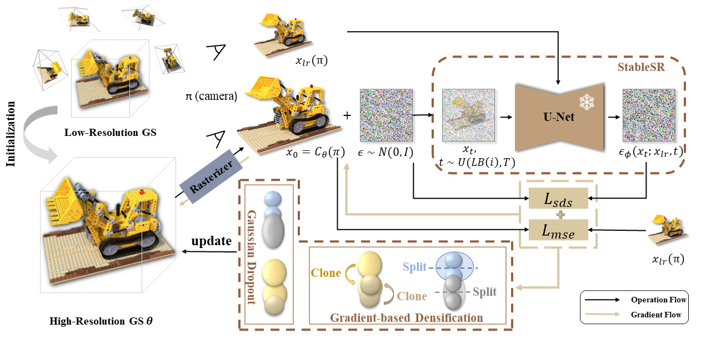

Abstract
Achieving high-resolution novel view synthesis (HRNVS) from low-resolution input views is a challenging task due to the lack of high-resolution data. Previous methods optimize high-resolution Neural Radiance Field (NeRF) from low-resolution input views but suffer from slow rendering speed. In this work, we base our method on 3D Gaussian Splatting (3DGS) due to its capability of producing high-quality images at a faster rendering speed. To alleviate the shortage of data for higher-resolution synthesis, we propose to leverage off-the-shelf 2D diffusion priors by distilling the 2D knowledge into 3D with Score Distillation Sampling (SDS). Nevertheless, applying SDS directly to Gaussian-based 3D super-resolution leads to undesirable and redundant 3D Gaussian primitives, due to the randomness brought by generative priors. To mitigate this issue, we introduce two simple yet effective techniques to reduce stochastic disturbances introduced by SDS. Specifically, we 1) shrink the range of diffusion timestep in SDS with an annealing strategy; 2) randomly discard redundant Gaussian primitives during densification. Extensive experiments have demonstrated that our proposed GaussainSR can attain high-quality results for HRNVS with only low-resolution inputs on both synthetic and real-world datasets.
Method
GaussianSR 1) synthesizes high-resolution novel views by distilling 2D diffusion priors into 3D representation with SDS to alleviate the lack of high-resolution data; 2) proposes Gaussian Dropout and Diffusion Timestep Annealing to reduce stochastic disturbance introduced by SDS.
Qualitative Comparison

GaussainSR can produce superior visual results characterized by clearer edges and sharper details compared to other SOTA methods.
Quantitative Comparison
We compare our method against several prior approaches on both synthetic and real-world datasets. GaussainSR outperforms previous state-of-the-art methods significantly in terms of PSNR, SSIM, and LPIPS metrics, while also requiring less rendering time.
| Blender Dataset | Mip-NeRF 360 Dataset | Deep Blending Dataset | ||||||||||
| Method | PSNR ↑ | SSIM ↑ | LPIPS ↓ | FPS ↑ | PSNR ↑ | SSIM ↑ | LPIPS ↓ | FPS ↑ | PSNR ↑ | SSIM ↑ | LPIPS ↓ | FPS ↑ |
|---|---|---|---|---|---|---|---|---|---|---|---|---|
| 3DGS | 21.78 | 0.868 | 0.104 | 192 | 20.28 | 0.581 | 0.420 | 33 | 26.64 | 0.854 | 0.312 | 60 |
| StableSR | 23.57 | 0.854 | 0.207 | <1 | 21.83 | 0.467 | 0.383 | <1 | 23.93 | 0.708 | 0.325 | <1 |
| Bicubic | 27.23 | 0.911 | 0.115 | 93 | 25.14 | 0.618 | 0.406 | 27 | 28.01 | 0.864 | 0.330 | 40 |
| NeRF-SR | 27.81 | 0.920 | 0.097 | <1 | -- | -- | -- | -- | -- | -- | -- | -- |
| GaussianSR(Ours) | 28.37 | 0.924 | 0.087 | 192 | 25.60 | 0.663 | 0.368 | 33 | 28.28 | 0.873 | 0.307 | 60 |